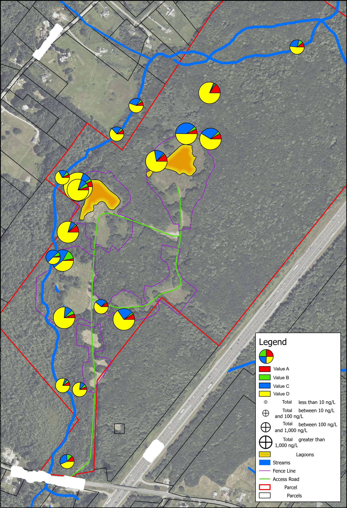
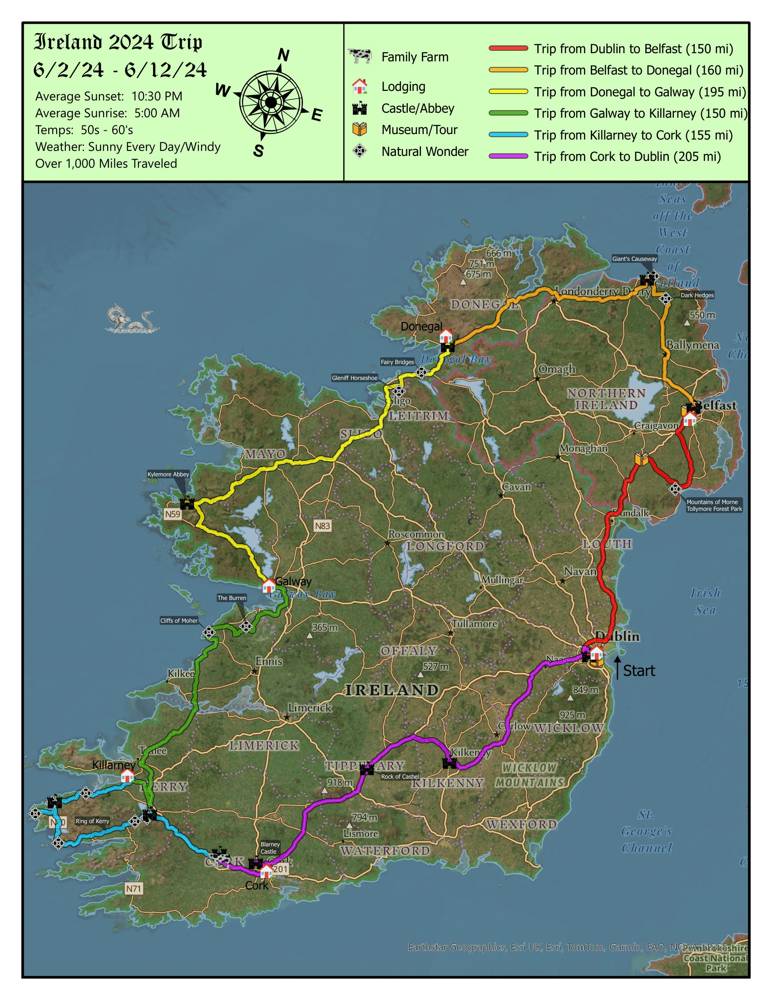
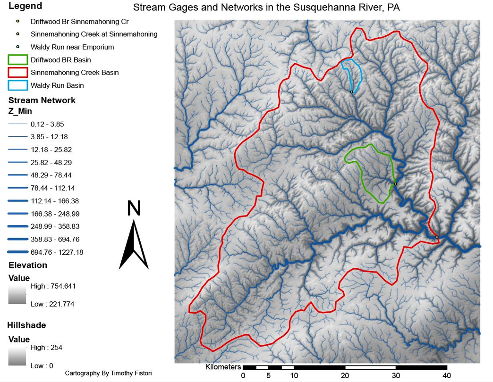

Tim Fistori .
Geospatial Expert
Boston, MA
timfist17@gmail.com
(781) 507-4648
Skills
* ArcPro and ESRI Software
* Geospatial Data Analysis
* SQL and Database Management
* Cartography
Work Experience
GIS Analyst / Nobis-Group
July 2022 - Current
In charge of GIS data and ESRI license management for the company. Responsible for Company Geodatabase organization and maintenance. creating GIS user profiles as well as creating SOPs and training for ArcMap uses on different projects. Converted company systems from Older ArcMap software to new ArcPro systems. Worked on large superfund projects for the EPA and Army Corp of engineers as well as municipal state projects.
Education
University of Massachusetts - Amherst
2021 - 2022
Master of Science Degree: Geographic Information Systems and Technology
×

University of Massachusetts - Amherst
2017 - 2021
Bachelor of Science Degree: Physical Geography
×

Map Portfolio
Mapping Diffent Value to one space

×

Orthomosaic Map Created Using Aerial Drones

×

Personal Map of Vacation to Ireland

×

Steam Gage and Networks in the Susquehanna River, RA

×